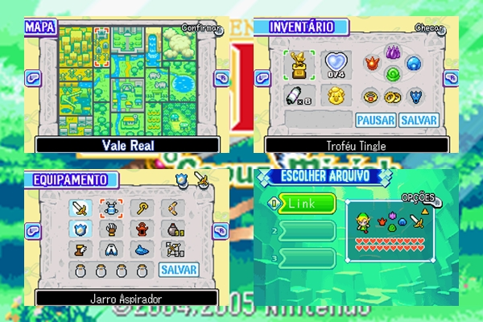

Minha Experiência
Joguei The Minish Cap pelo Visual Boy Advance e desde o começo achei ele muito divertido — tem uma leveza que poucos jogos da franquia têm, uma sensação de mundo vivo e cheio de coisas pra descobrir. Passei meses explorando cada canto. No final, não só zerei como completei tudo que havia para fazer: cada segredo, cada quest, cada item desbloqueável.
O coração do 100% é a mecânica das Kinstones — fragmentos de pedra que você coleta pelo mundo e encaixa com NPCs específicos para desbloquear baús, eventos e passagens escondidas. São dezenas deles espalhados por Hyrule, e encontrar cada pessoa certa para cada fragmento virou uma investigação em si mesma. Não era difícil no sentido de exigir habilidade — era difícil no sentido de exigir paciência e atenção a cada detalhe do mapa.
Registro Visual

[ legenda ]Momentos que Ficaram
- Completar 100% — cada Kinstone encaixada, cada quest fechada
- A satisfação de ver o mapa inteiramente desbloqueado
- Descobrir que alguns NPCs só aparecem depois de determinadas fusões de Kinstone, escondidos atrás de outros NPCs
Dificuldades
Reunir todos os fragmentos de Kinstone foi um desafio à parte. Alguns encaixes são com personagens que só aparecem em horários ou condições específicas dentro do jogo, e não há indicação clara de onde estão ou com quem falar. Exige voltar ao mundo repetidamente, conversar com todo mundo, não ignorar nenhum canto.
É o único jogo que completei 100% — e foi divertido até o último fragmento.
Jogado por meses — data exata não lembro